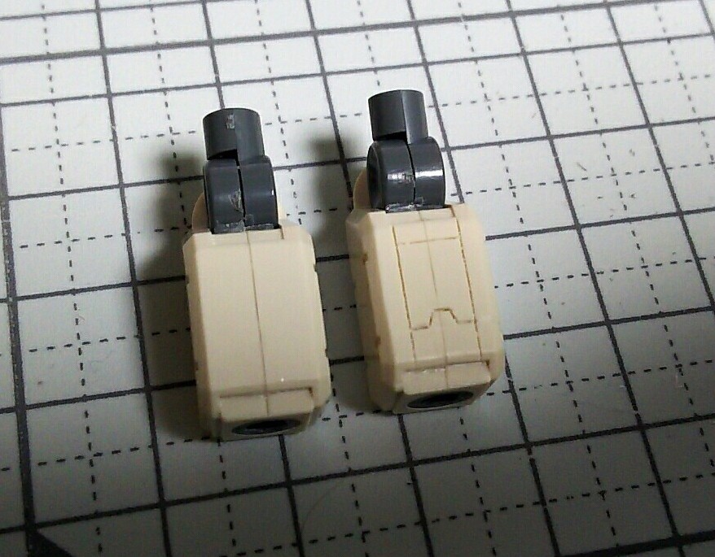
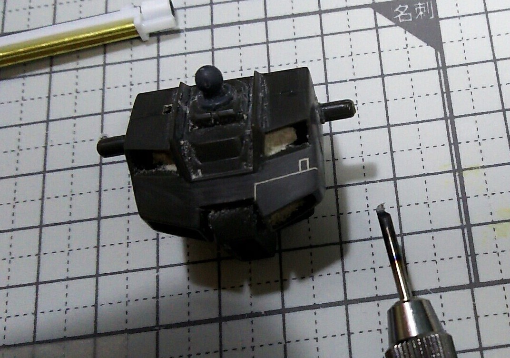
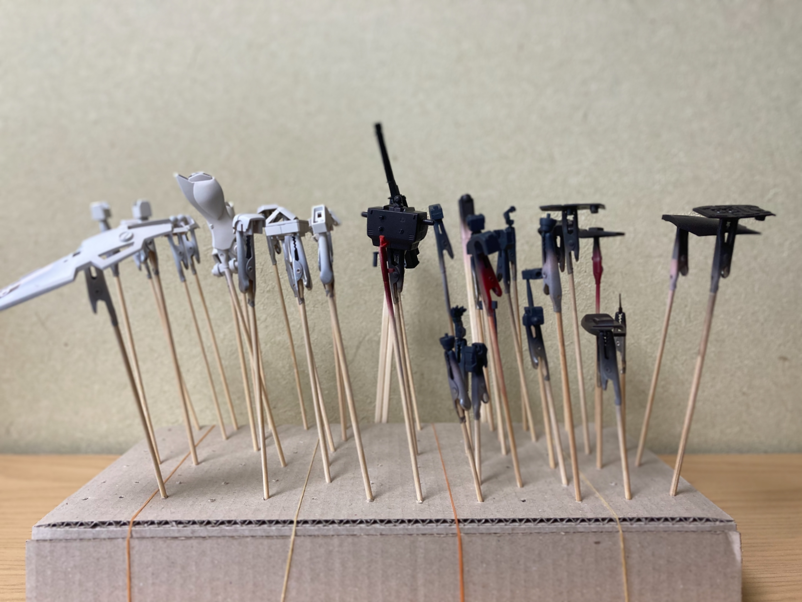
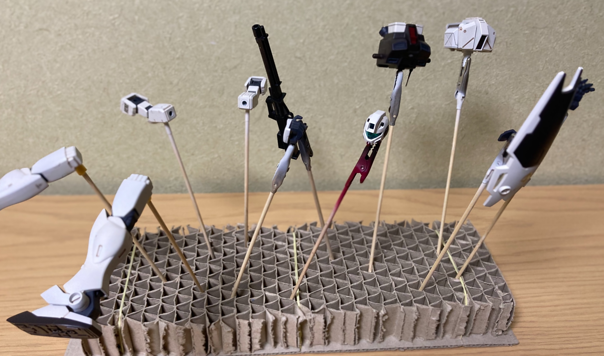

胸部アップ：
胸部アップ：
デカールは控えめで適度な感じにしています。
 Back view：
Back view：
スタイリッシュに仕上がっているのではないでしょうか？ シールド裏面が形成色なのはご愛嬌。
 ポーズ1：
ポーズ1：
シンプルなキットですが、古臭さを感じさせず、どんなポーズをとっても様になります。
 ポーズ2：
ポーズ2：
ボディーカラーのダークブラウンがシックな雰囲気を醸し出しています。
 ポーズ３：
ポーズ３：
ロングライフルと特徴的なシールドが映えますね。
 Wepon：
Wepon：
シールド（上）と自作したロングライフル（下）
 大腿の延長：
大腿の延長：
連邦の機体は足が長いほうが今風で全体的にバランスが取れます。
 ロングライフルを自作：
ロングライフルを自作：
本来はジム改の兵装ですが、ジム系で個人的に一番かっこいい武器なので自作して取り付けます。残念ながらHGのスケールでキット化されていません（泣）


スジボリ＆後ハメ加工：
塗装のため後ハメ加工を施します。合わせ目を消したあと、スジボリによってモールドを追加しディテールアップを図ります。

 塗装前の改造後仮組み：
塗装前の改造後仮組み：
足延長のおかげでオリジナルよりもプロポーションがいい感じです。加えて肩関節軸もオリジナルよりも少し上にずらす加工を施すことによって、理想のジムコマンドのプロポーションに近づけるよう工夫をしました。

 下地塗装：
下地塗装：
全パーツ処理。サーフェーサーはガイアノーツのエヴォのグレー色を使用しています。

塗装：
配色は備考欄に記載します。基本的にはMGジムコマンド（コロニー仕様）の色を意識して作りました。
 スミ入れ：
スミ入れ：
スミ入れをすることで全てのモールドが適度に強調されます。白地にはアクリル系のブラウンを、暗めのところにはブラックを使用しました。
 後ハメ加工：
後ハメ加工：
塗装とスミ入れが終わったら、接着が必要な部分を組み付けます。ダクトの部分が別色かつ、胴体は合わせ目を消した加工を施しているため、本来内側から取り付ける箇所を外側から取り付けられるような加工を施しています。

トップコート：
仕上げにはクレオスのスーパークリア（つや消し）を使用しました。
| 胴体 | マホガニー 80%, ブラック 20% |
|---|---|
| ロングライフル | ダークグレー 60%, ブラック 40% |
| フレーム | ファントムグレー 100% |
| コックピットハッチ | レッド 70%, マホガニー 30% |
| 四肢 | ホワイト 70%, セ-ルカラー 30% |
制作にあたり参考にしたWebページ
[1]真夜中は別の顔さん（ブログ）
https://gutari-moritan.at.webry.info/upload/detail/122313740543216208883.jpg.html
[2]へろへろさん（GUNSTA）
https://gumpla.jp/hg/237587
本作品はGUNSTAにも投稿しておりますので、そちらも併せてご覧ください！
https://gumpla.jp/hg/659358
Jan. 2018 ~ Feb. 2021
{kind=link}